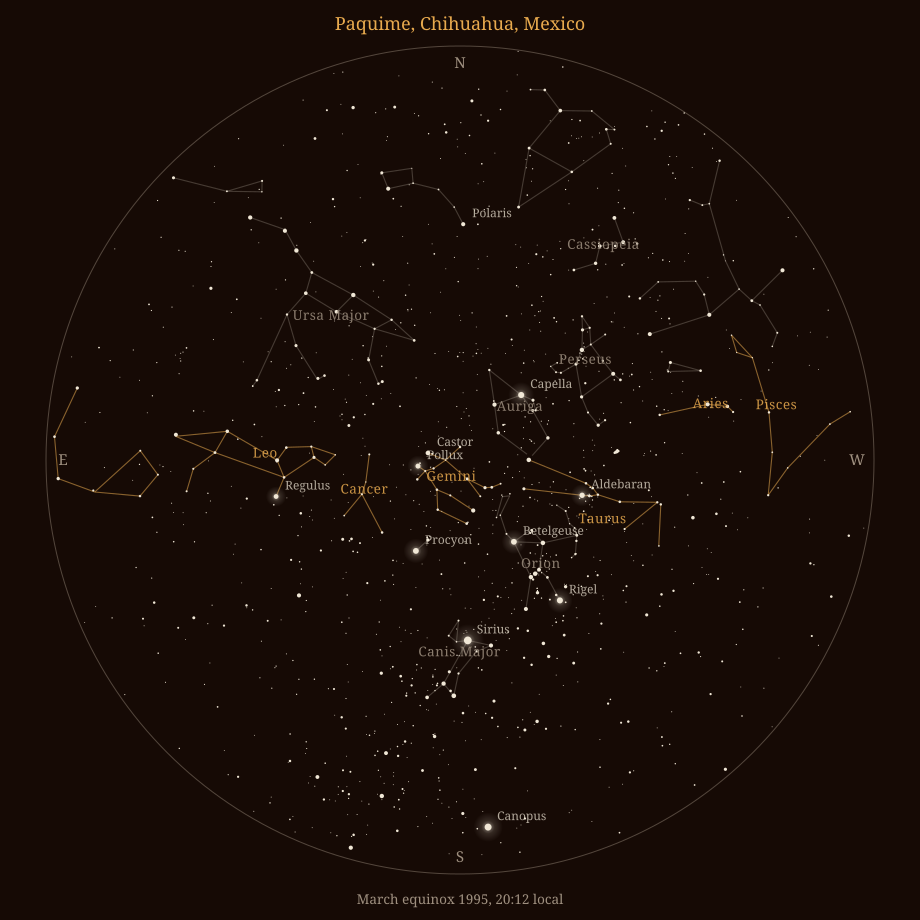

Why an astrology app should show you the real sky
Modern astrology mostly reaches you as a diagram. A circle, twelve slices, symbols round the edge. It is a fine tool, and it has one problem: it makes the sky sound theoretical. The stars are not theoretical. They are physical, enormous, and up there tonight.
Undersky opens on them. Not a picture of the sky and not a mood image behind the text. The real one, from where you are standing, at the hour you are standing there.
What happens when you actually see it
If you have ever been somewhere properly dark and looked up, you already know what this page is about. The sky stops being a ceiling and becomes a depth. Some stars are near and some are impossibly far and you can see the difference. The Milky Way turns out to be a thing you are inside of. It is not subtle. People go quiet.
You are not looking at a picture of the universe. You are standing in it, and it is standing around you. That has always been true. The only new thing is that you noticed.
The stars and the planets are not academic. They are not even only spiritual. They are physical, brilliant and magical, all at once, and they are up there right now.
Most people cannot get to a dark sky often, and most people live under a glow that erases all but the brightest handful. That is the gap this is here to close.
One night, one place

This is that sky, on that evening, from that ground. Orion standing sixty degrees up in the south with Betelgeuse on his shoulder and Rigel at his foot. Sirius, the brightest star there is, burning underneath him. Gemini almost straight overhead. Taurus going down in the west. Leo coming up in the east. And low in the south, Canopus, which you cannot see from most of the United States or anywhere in Europe, and which is there because that hill is far enough south to have it.
Paquime was at its height between about 1060 and 1340. The people who built it made a cross out of the ground, the Monticulo de la Cruz, and used it to keep track of the equinoxes and the solstices. On the mornings of 21 March and 21 September the sun still comes up due east of it. They built a calendar the size of a courtyard, out of earth, aimed at the horizon.
They could do that because of something lovely: at the equinox the sun rises due east and sets due west, and it does that from everywhere on Earth, the same morning, for everyone. Paquime, Cairo, your street.
They marked it with architecture. We draw it on a phone. The sky has not changed. Only the instrument.
What you are looking at
The sky map is the first thing on your Today screen, and everything in it is the real thing rather than artwork.
| What you see | What it is |
|---|---|
| 5,062 stars | Their real positions, at their real brightness. The bright ones are bright and the faint ones are faint, which is where the depth comes from |
| 32 constellations | The figures people have actually been pointing at for millennia. Orion keeps his belt and shield, Cassiopeia is a full W, Sagittarius is the teapot |
| The planets | Where they genuinely are tonight, looking like themselves, carrying their names and their symbols |
| Your horizon | In the right place. What is under your feet is dimmed, so you can see what is truly overhead |
You are at the centre looking out, which is a planetarium and is also simply where you are. Pan far enough and you are looking through the planet at the sky on the other side of it.
The sky is uneven, and that is the beautiful part
It would be easy to draw a tidier sky. Even spacing, matching stars, constellations cleaned up into logos. Every one of those makes the picture nicer and makes it mean less, because what moves you under a real sky is exactly that nobody designed it.
Some figures are enormous and faint and take patience. Some are small and unmistakable. Cassiopeia really is that little. Aquarius really does take a moment. Orion really is that obvious, from everywhere, which is why every culture that could see him gave him a name.
Tap any figure and it brightens and shimmers so you can find its shape. That is the whole tutorial.
Why this is in an astrology app
Your birth chart is a record of where these specific objects were the moment you arrived. Whatever you take that to mean, and people take it to mean very different things, it is about real objects that were really in those places. Read off a wheel, it stays abstract. Seen where it actually happened, Jupiter sitting where the reading says Jupiter is sitting, it turns into something you can walk outside and look at.
That is the part worth having. Not a belief you take on, but a thing you notice: these lights are old, they are physical, they are extraordinary, and they were arranged over you once and are arranged some other way tonight.
We want you to see it, feel it, and recognise yourself in it. That is why the sky is the first thing the app shows you.
Your birth details and your chart are worked out on your phone and stay there. There is no account, and the App Store privacy label for Undersky reads Data Not Collected. There is a separate guide to checking any astrology app's privacy for yourself.
Common questions
Why does an astrology app have a star map?
Because the sky is a real place and a chart wheel is only a diagram of it. The wheel is useful and it is also very good at making you forget any of this is real. Undersky opens on the sky itself.
Are the stars real stars?
Yes, 5,062 of them, in their real places and at their real brightness. Sirius is the brightest because Sirius is the brightest.
Is this the sky above me right now?
Yes, for your place and your time, with the horizon where it belongs and everything below it dimmed.
Do I need to know astronomy?
No. Tap a constellation and it lights up on its own. Tap a planet and it tells you which one it is and what it is doing in your chart.